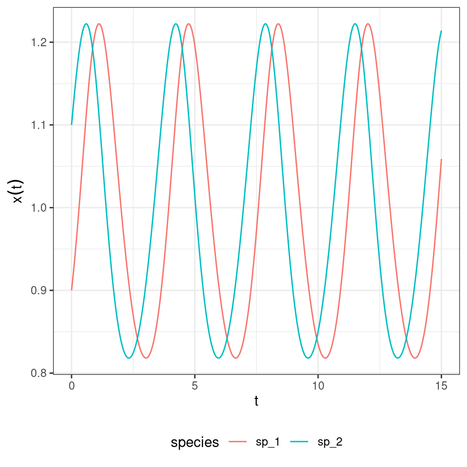
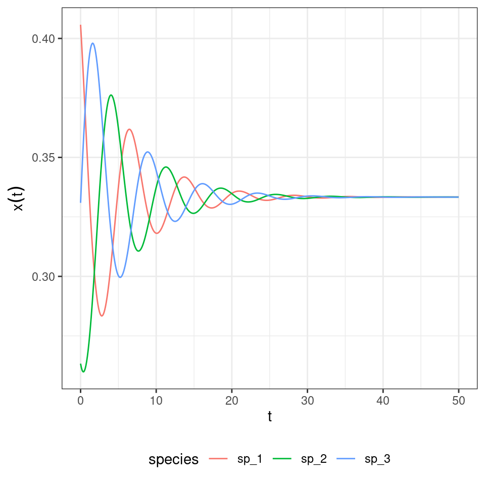

Lecture 10 A tibble: 4 x 3
time species density
Not only the equilibria are the same, but also the dynamics are the same once time has been properly rescaled. Similarly, for each RE system we can always recover a matrix with zero in the last row by applying the transformations detailed above, and therefore recover the corresponding GLV. For example, take the matrix for the RPS above, and make each coefficient in the last row zero by adding the appropriate constant to each column. Then one recovers some sort of a predator-prey system:
r <- c(-1, 1)
A <- matrix(c(-1, 2,
-2, 1), 2, 2, byrow = TRUE)
x0 <- c(0.9, 1.1)
glvex <- integrate_GLV(r, A, x0, maxtime = 15, steptime = 0.01)
in which the species oscillate around one.
10.0.1 Hypertournament games
The rock-paper-scissor game above is a simple case of a “hypertournament” game. Take the zero-sum payoff matrix \(A = -A^t\). Then, we have
\[ \sum_i \sum_j A_{ij} x_i x_j = 0 \] and the RE simplifies to
\[ \dfrac{d x}{dt} = D(x) A x \]
At equilibrium, either some elements of \(x\) are zero, or
\[ A x^\star = 0 \] meaning that if a feasible equilibrium \(x^\star\) exists, it is an eigenvector of \(A\) corresponding to a zero eigenvalue.
10.0.1.1 Number of coexisting species
We now show how the equations above can arise when modeling ecological dynamics. Suppose that a forest is composed of a fixed number of trees. Each time a tree dies (with rate \(d = 1\) for all species), a gap in the canopy opens, and species will compete to colonize it. Let’s assume that two seeds (sampled with probability proportional to the density of the species) land in the empty patch, and that they compete to fill the gap. Call \(H_{ij}\) the probability that \(i\) wins when competing with \(j\); we have \(H_{ij} + H_{ji} = 1\). We can write the dynamics (Grilli et al. 2017) as:
\[ \begin{aligned} \dfrac{d x}{dt} &= x_i \left(\sum_j 2 H_{ij} x_j - 1 \right) \\ &=x_i \sum_j (2 H_{ij} x_j - x_j) \\ &= x_i \sum_j (H_{ij} x_j + (1 - H_{ji}) x_j - x_j) \\ &= x_i \sum_j (H_{ij} - H_{ji}) x_j \\ &= x_i \sum_j A_{ij} x_j \end{aligned} \]
I.e., we recover the RE for a zero-sum game. What happens if we draw \(H\) (and therefore \(A\)) at random? Allesina and Levine (2011) and Grilli et al. (2017) applied the results of Fisher and Reeves (1995) and Brandl (2017) to show that, when \(n\) species compete, the probability of observing \(k\) coexisting is \(p(k|n) = \binom{n}{k} 2^{1-n}\) when \(k\) is odd, and \(p(k|n) = 0\) when \(k\) is even.
Importantly, to find the set of coexisting species we do not need to integrate dynamics. One can use linear programming to solve for the set of species that will coexist.
library(lpSolve)
# Build a random matrix H such that H_ij + H_ji = 1
random_H <- function(n){
# build random hypertournament H
H <- matrix(runif(n * n), n, n)
return(H / (H + t(H)))
}
# Find the optimal strategy for the two-person game encoded in H
# using linear programming.
# This is also the coexistence equilibrium of the dynamical system.
find_optimal_strategy <- function(H){
n <- dim(H)[1]
f.obj <- rep(1, n)
f.con <- H
f.rhs <- rep(1, n)
f.dir <- rep("<=", n)
z <- lp ("max", f.obj, f.con, f.dir, f.rhs)
return(z$solution / sum(z$solution))
}Now let’s try to count how many species suvive when starting with 10:
n <- 10
num_simulations <- 5000
results <- tibble(simulation = 1:num_simulations, coexisting = 0)
for (i in 1:num_simulations){
H <- random_H(n)
coexisting <- find_optimal_strategy(H)
results[i,"coexisting"] <- sum((coexisting > 0)*1)
}
# and plot
ggplot(data = results) +
aes(x = coexisting) +
geom_bar() +
scale_x_continuous(breaks = 0:10)
10.0.2 Lyapunov function
In the rock-paper-scissor example above, species cycled neutrally around the unique equilibrium point. To show that this is in fact the behavior of this type of RE, we write a Lyapunov function. By finding a constant of motion we can show that the species will follow closed orbits.
Suppose \(x_{i}^\star > 0\) is the equilibrium for the system. We write:
\[ V(x) = -\sum_i x_i^\star \log \frac{x_i}{x_i^\star} . \]
Because of Gibbs’ inequality, \(V(x) \geq 0\) for any \(x\), and is equal to zero only if \(x = x^\star\). Note also that at equilibrium \(2 \sum_j H_{ij} x_j^\star = 1\). We write:
\[ \begin{aligned} \dfrac{d V}{d t} &= \sum_i \dfrac{\partial V}{\partial x_i} \dfrac{d x_i}{d t}\\ &= - \sum_i \frac{x_i^\star}{x_i} \dfrac{d x_i}{d t} \\ &= -2 \sum_{i,j} x_i^\star H_{ij}x_j + \sum_i x_i^\star\\ &= -2 \sum_{i,j} x_i^\star H_{ij}x_j + 1\\ &= \sum_j \left(-2 \sum_i H_{ij}x_i^\star \right) x_j + 1\\ &= \sum_j \left(-2 \sum_i (1 - H_{ji}) x_i^\star \right) x_j + 1\\ &= \sum_j \left(-2 \sum_i x_i^\star + 2 \sum_i H_{ji} x_i^\star \right) x_j + 1 \\ &= \sum_j \left(-2 + 1 \right) x_j + 1 \\ &=- \sum_j x_j + 1\\ &= 0 \end{aligned} \]
We have found a constant of motion, meaning that the system will follow closed orbits. Hence, unless we start the system precisely at \(x^\star\), the abundances will cycle neutrally around the equilibrium.
Let’s try with a larger system:
n <- 5
# search for random H yielding all species coexisting
i <- 0
while(TRUE){
i <- i + 1
set.seed(i)
H <- random_H(n)
x_star <- find_optimal_strategy(H)
if (all(x_star) > 0) break
}
# payoff matrix
A <- H - t(H)
# initial conditions close to equilibrium
x0 <- x_star + runif(n) * 0.2
x0 <- x0 / sum(x0)
fivespp <- integrate_RE(A, x0, maxtime = 400, steptime = 0.1)
10.0.3 Higher-order interactions
We can extend the game above to the case in which three (or more) seeds compete to fill each patch. Grilli et al. (2017) showed that in this case, one can write the replicator equation:
\[ \dfrac{d x_i}{dt} = x_i \sum_{j,k} A_{ijk} x_j x_k \] where the tensor \(A\) (a three-dimensional matrix) encodes the effect of a pair of species (\(j\) and \(k\)) on the density of \(i\). Importantly, one can choose the tensor such that the equilibrium is the same as for the two-player replicator equation: take \(A_{ijk} = 2 H_{ij} H_{ik} - H_{ji} H_{jk} - H_{ki} H_{kj}\), which can be derived from first principles by writing the stochastic dynamics. What is surprising is that, while the equilibrium is unchanged, the dynamics are now globally stable:
# Now payoff is a tensor
RE_3 <- function(t, x, parameters){
with(as.list(c(x, parameters)), {
x[x < 10^-8] <- 0 # prevent numerical problems
x <- x / sum(x) # keep on simplex
n <- length(x)
dxidt <- rep(0, n)
for (i in 1:n){
dxidt[i] <- x[i] * x %*% P3[i,,] %*% x
}
list(dxidt)
})
}
# general function to integrate RE_3
integrate_RE_3 <- function(H, x0, maxtime = 40, steptime = 0.05){
times <- seq(0, maxtime, by = steptime)
n <- nrow(H)
P3 <- array(0, c(n, n, n))
for (i in 1:n){
for (j in 1:n){
for (k in 1:n){
P3[i,j,k] <- 2 * H[i,j] * H[i,k] - H[j,i] * H[j,k] - H[k,i] * H[k,j]
}
}
}
parameters <- list(P3 = P3)
# solve numerically
out <- ode(y = x0, times = times,
func = RE_3, parms = parameters,
method = "ode45")
# plot and make into tidy form
out <- plot_ODE_output(out)
return(out)
}
# integrate the system above
fivespp <- integrate_RE_3(H, x0, maxtime = 800, steptime = 0.1)
And the rock-paper-scissors:
H <- matrix(c(1/2, 1, 0,
0, 1/2, 1,
1, 0, 1/2), 3, 3, byrow = TRUE)
x0 <- runif(3)
x0 <- x0 / sum(x0)
rps <- integrate_RE_3(H, x0, maxtime = 50, steptime = 0.1)
References
Allesina, Stefano, and Jonathan M Levine. 2011. “A Competitive Network Theory of Species Diversity.” Proceedings of the National Academy of Sciences 108 (14): 5638–42.
Brandl, Florian. 2017. “The Distribution of Optimal Strategies in Symmetric Zero-Sum Games.” Games and Economic Behavior 104: 674–80.
Fisher, David C, and Richard B Reeves. 1995. “Optimal Strategies for Random Tournament Games.” Linear Algebra and Its Applications 217: 83–85.
Grilli, Jacopo, György Barabás, Matthew J Michalska-Smith, and Stefano Allesina. 2017. “Higher-Order Interactions Stabilize Dynamics in Competitive Network Models.” Nature 548 (7666): 210.